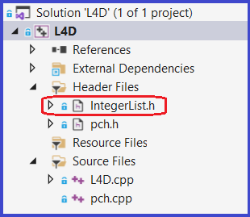
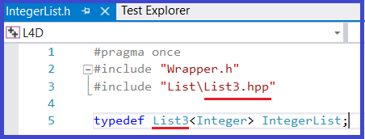
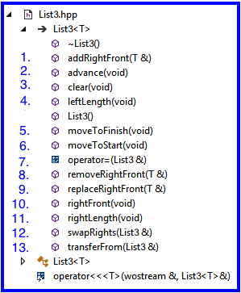

Layering a Component
0. Reference material
1. Setup
1.1 Get the L4Starter Download
- Download L4Starter.zip to your machine - to be used in subsequent steps
1.2 Copy List3.hpp from the L4Starter.zip
- Inside L4Starter.zip is a file named List3.hpp
- For this assignment you will be making changes to this file
- Copy this file to the following folder on your machine csse373devenv202330-yourID\components\include\List
|
|
1.3 Create L4D project
- Create project L4D
- Make it a Unit Test Project
- Configure it to run in Debug configuration
- Create file IntegerList.h (see 1.5 below) and add it to your L4D project (as shown in the screenshot to the right)
- Copy L4D.cpp file from the downloaded .zip to your new csse373devenv202330-yourID\L4D folder
The test cases in the downloaded L4D.cpp will test your implementation of List3.hpp while in Debug configuration, so they test against the values stored in List3's internal representation
1.4 Create L4R project
- Create project L4R
- Make it a Unit Test Project
- Configure it to run in Release configuration
- Create file IntegerList.h as show below and add it to your L4R project in the same manner that you added to the L4D project
- Copy L3R.cpp file from csse373devenv202330-yourID\L3R to your new csse373devenv202330-yourID\L4R folder
We can reuse the test cases from L3R because they test at the abstract level, and List3's abstract values are the same as List2's abstract values
|
 |
1.5 How to create IntegerList.h
- See screenshot to the right
|
 |
2. L4 Statement of Work
2.1 Primary Objectives
The primary objective of this lab is to provide you experience working with:
- Layering a component (e.g., List) on another already existing component (e.g., Queue).
- This implementation is not meant to be necessarily a good (performance-wise) implementation. In fact it is not a good one from that respect. The idea here is to have you work with an unusual internal rep in order to reinforce the abstract thinking that goes with interpreting the correspondence between the concrete internal rep and the List's abstract value. From this standpoint, it is an excellent implementation.
2.2 Specifics
Steps:
- Start Visual Studio
- Open project L4D
- Find and open List3.hpp
- Implement a member function - think strategically, some need to be done before others in order to for a unit test's "Test set up" part to work correctly
Hints:
- Reread the Component Layering slides from Week #3 on the CSSE373 Moodle site
- Reference the Queue and List specifications
- Implement all of List3's stubbed out member functions based on the instructional materials
- Look for the TODO comments in List3.hpp
|
 |
Important Restrictions:
- Obey the correspondence - When implementing the member functions you must obey the correspondence internal contract
That means:
- assume that the correspondence holds when the member function is called
- guarantee that the correspondence holds when the member function exits
- Use Design by Contract - That is, no defensive programming of List's operations
- What this means is that the implementation of a List operation must not contain code that checks to make sure that the List operation was called correctly by the client
- Therefore, for all List operations that have a nontrivial requires clause, you must program them with the assumption that their requires clause holds at the time the operation is called
- Operations with non-trivial requires clauses include: advance, removeRightFront, rightFront, and replaceRightFront
- No Cross Calling - None of List's member functions are permitted to make calls to any of the other public List member functions, i.e., no cross calling
- For example, under this rule it is illegal for the swapRights operation to call any other List operation, e.g., addRightFront
- All List operations (e.g., swapRights) should directly manipulate List's data members (i.e., repRZ and repQ) in order to satisfy the operation's ensures clause
- Calling Down - create private member functions that capture code that starts to appear in multiple different places in your List2 implementation and then instead of duplicating this code (i.e., having it appear in multiple different member function implementations) make a call down to the private member function from the public member function - this engineering technique is called procedural abstraction and is called calling down - for this assignment a private operation that can move items from one queue to second queue will come in real handy
- No Recursion - None of List's member functions are permitted to be recursive
- About Making Copies -
- Copying the data member repQ - When implementing List3's operator = you must use Queue's operator = to make a copy of repQ. Do not call operator = to make a copy of repQ in any implementation of the other List3 member functions - this is a performance constraint. If when implementing any other List operations you think you need to call operator = to make a copy of repQ, then rethink your algorithm until you figure out a way to not make a copy. Use transferFrom.
- Copying the data member repRZ is no problem because it is an Integer, with a small constant size that is easy to copy and takes little execution time
- Copying variables of type T - There is no need to make copies of the items being added or removed to the list. These are all items of type T. If you need to move items of type T from one variable to another, then call the transferFrom operation to do it.
3. Testing
- L4D testing first
- These test against the List's internal representation, so these unit tests will only work with this particular implementation
- Look at these unit tests to better understand the correspondence between a List's abstract value and its internal representation
- L4R testing second
- These test at the abstract level only and will work for any List implementation
- Unfortunately the unit tests in L4D and L4R do not thoroughly test the List3.hpp member functions
- If you want to earn full credit for this assignment you must add more unit tests, particularly to L4D.cpp. In particular, see the comment about testing in List3.hpp associated with swapRights operation
Use Boundary Condition Testing:
- Add/Remove/Access at the front, middle, and at the end of a List
the middle is not a boundary, but the front and end are
- Add to an empty List and Remove from a List with 1 item to make it empty
the boundary here is going from empty to non-empty on an Add, and going from non-empty to empty on a Remove
- There are 4 addRightFront's unit tests - use these 4 different tests as a guide for boundary condition testing the other member functions:
- adds an item to: (<>,<>) - incoming List is empty
- adds an item to: (<>,<22>) - incoming List has empty left and non-empty right
- adds an item to: (<17,2,10>,<11>) - incoming List has non-empty left and non-empty right
- adds an item to: (<17,2,10,83>,<>) - incoming List has non-empty left and empty right
- Notice that in both #2 and #3, there is only one item in the List's right prior to the call to addRight Front. If I were to add additional tests for addRightFront, I would vary #2 and #3 above by having more items in the List's right before the call to addRightFront
The Grader's test cases:
Grading will be done running a more complete set of unit tests which will systematically stress your member function implementations
4. Submitting the Assignment for Grading
- Follow VS2022 instructions for committing and pushing your L4 projects to your GitHub Education CSSE373 repo
- Use the commit message "L4 final commit, ready for grading"